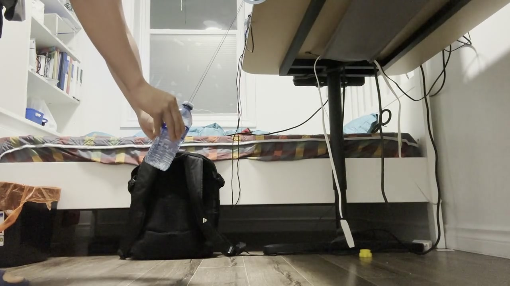
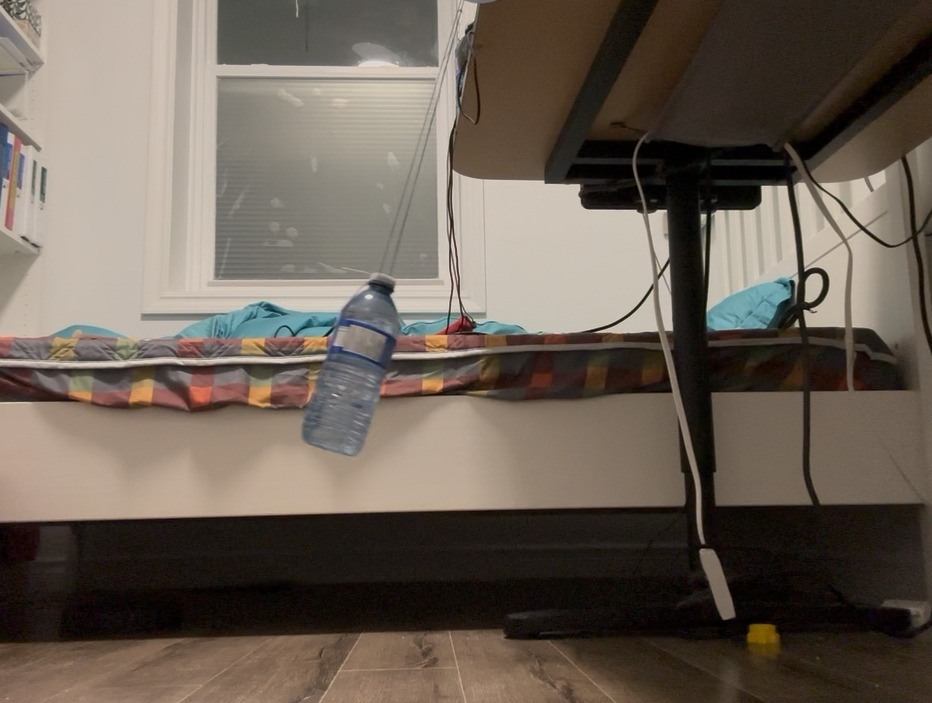
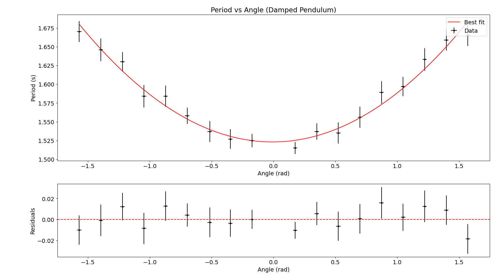
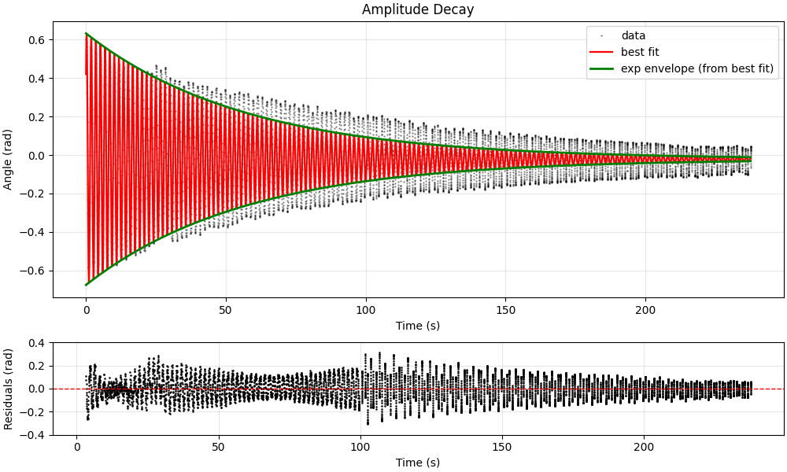
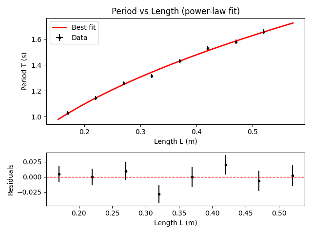
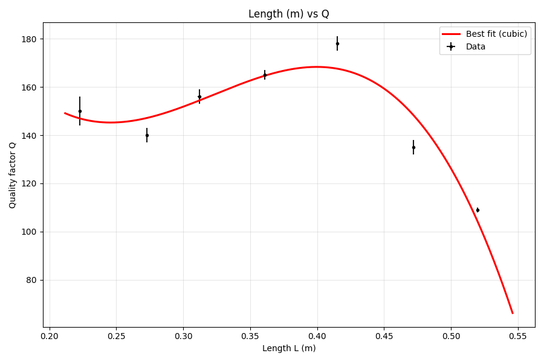

PHY180 / Classical Mechanics
Damped Pendulum Lab
Build a real pendulum, film it at 60 fps, track every swing in Tracker, and see whether Prof. Wilson’s predictions survive your error bars.
What this was
PHY180’s pendulum project is a full lab report, not a single number at the end. I built a damped pendulum, recorded its motion, and produced five analyses the course asked for: angle dependence of the period, amplitude decay (and Q factor vs time), length vs period (power law and log–log), and length vs Q factor. The write-up below follows the report I submitted; the graphs and numbers are the ones I actually fit to data.
The setup was deliberately low-tech: a 500 mL water bottle as the bob, two folded “sewing strings” over a clip hanger so the swing stayed in one plane, and lengths from about 15 cm to 52 cm measured to the clip. For angle sweeps I timed periods by hand; for everything else I leaned on video and OSP Tracker so reaction time was not fighting the physics.



How I measured it
Videos were shot on an iPhone at 60 Hz, rested on dumbbells so the bob and camera shared a height (less parallax), then trimmed in Clipchamp and exported at 1080p. In Tracker I calibrated with a metre stick, set axes, and auto-tracked a consistent feature on the bottle — not the whole label, or the centre of mass wanders and your angles get noisy.
For length vs period I used eight lengths and three trials each, always releasing near θ0 = π/6 as checked in Tracker. Q vs length reused that release angle. The angle-dependence block used a stopwatch for one full cycle per angle from −90° to +90° in 10° steps (five repeats each), which is where human reaction time (~2.0 ± 0.2 s in my stopwatch test) becomes an honest limitation in the discussion.
Results that mattered
Amplitude decay. The angle vs time trace fit the damped cosine model with τ = 57.41 ± 0.04 s and T = 1.65 ± 0.01 s. From that, method 1 gave Q = 109.3 ± 0.7; counting swings down to e−π/2 ≈ 20% of the initial amplitude (method 2) gave Q = 109 ± 1 across three trials — inside each other’s uncertainties.

Length vs period. A power law T = kLn gave k = 2.17 ± 0.03 and n = 0.42 ± 0.01 (R² = 0.95). Theory expects k ≈ 2 and n = 0.5; my n was about 16% off and not within uncertainty, which I attributed mostly to how length and release angle were set — not a bad fit line, but a systematic offset worth saying out loud.


Angle vs period. A full quadratic fit had C = 0.042 ± 0.003 (clearly not zero), while B = 0.001 ± 0.002 was consistent with zero — the symmetry argument from class. In a small-angle window the graph flattens toward T(θ) ≈ T0, which is how I reconciled my data with Wilson’s “no dependence” story without ignoring the curvature at large θ.
Python analysis
Tracker exports tab-separated tables (time, angle, uncertainties). I
kept the analysis scripts in a local
PHY180 assets folder next to those files — the same layout
as on
GitHub
if you want to read the full source. Below is what each script does; two
files overlap on ring-down fitting (noted in the table).
| Script | Report section | What it does |
|---|---|---|
fit_black_box.py |
Angle vs period (Fig. 3) |
Adapted from Prof. Wilson’s
black_box_fit.py: loads four-column data, fits
T(θ) = a + bθ + cθ² with
weighted curve_fit, prints parameters with
uncertainties, χ², correlation matrix, and saves the fit plot.
|
run_ringdown_with_bb.py |
Amplitude decay / Q (Fig. 4) | Main ring-down script. Aligns data to the first peak, fits a damped cosine, inflates parameter errors using reduced χ², derives T and Q = πτ/T, and plots the red cosine plus a green envelope from the same fit (not a separate envelope fit). |
Qfactor.py |
Same as above |
Earlier duplicate. Same damped-cosine model and
fit_black_box loader, but delegates plotting to
bb.plot_fit instead of the custom two-panel figure.
I kept run_ringdown_with_bb.py for the report
graphics.
|
run_length_vs_period_powerlaw.py |
Length vs period (Fig. 5) | Fits T = kLn with errors on T, prints k, n, R², reduced χ², and theory reference k = 2π/√g. Produces the linear plot with residuals and a log–log view. |
plot_L_vs_Q.py |
Length vs Q (Fig. 7) |
In Qfactor Videos For Different Lengths/. Cubic
fit Q(L) = a + bL + … with
optional weighting (default unweighted so a single tight dQ
does not dominate). Reads LQ_data.txt built from
per-length ring-down runs.
|
print_tau.py |
Q vs length (supporting) |
Batch helper: fits each ringdown_t_theta.txt,
prints τ only, and writes
ringdown_t_theta_with_cycles.txt with a cycle index
column for method 2 (counting swings to
e−π/2 amplitude).
|
Shared model (ring-down)
Every ring-down script uses the same offset plus exponentially decaying cosine — the fit that produced τ = 57.41 s and Q ≈ 109 on the page:
θ(t) = C + A · exp(−t/τ) · cos(ωt + φ) T = 2π/ω Q = π · τ / T
Initial guesses come from the median offset, zero-crossing period, and
a log-linear slope through peak amplitudes so
scipy.optimize.curve_fit converges reliably on noisy
Tracker exports.
Workflow
1. Export from Tracker → *.txt (four
columns where uncertainties exist).
2. Run the script for that analysis block (double-click
on Windows opens a plot and prints fit parameters in the terminal).
3. Paste printed values (and matplotlib figures) into
the lab report. ChatGPT helped adapt Wilson’s plotting boilerplate for
fit_black_box.py; the models, data, and fits are mine.
What I’d do differently
The report’s appendix is explicit: two Type B issues dominated. Sixty frames per second caps time resolution at ~0.008 s per half frame; a 240 fps camera would shrink that. Tracking the blue label instead of a fixed point added roughly ±0.01 rad — next time I’d track the white cap on a plain background so Tracker stops hunting the wrong pixel.
The Python section above lists every script and which figure it fed.
ChatGPT helped adapt Wilson’s black_box_fit.py into
fit_black_box.py; the prompts and limits are in the report
appendix. The physics, data, and fits are mine.
If you want every equation, appendix derivation, and table, that’s all in the PDF I submitted — this page is the version I’d use to explain the project in five minutes.